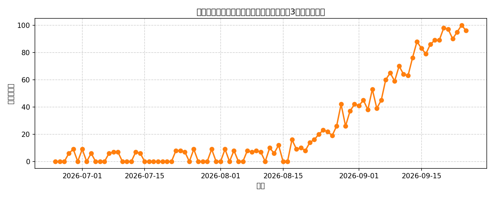
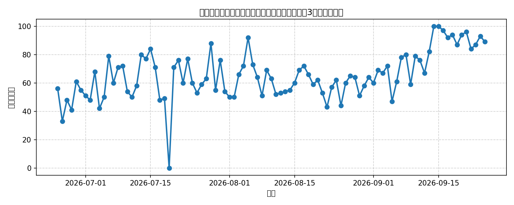

📈 インフルエンザの全国検索トレンド
過去3ヶ月間の「インフルエンザ 症状」に関する検索関心度の推移です。

💡 今の傾向と推奨される予防策
- 傾向：季節の変わり目や気温の変化に伴い、発熱や咳などの症状に関する検索が変動します。グラフの山が高くなっている時期は特に注意が必要です。
- 予防策：帰宅時や食事前のこまめな手洗い・アルコール消毒、適度な湿度の保持（50〜60%）、定期的な室内の換気を心がけましょう。
📈 新型コロナウイルスの全国検索トレンド
過去3ヶ月間の「コロナ 症状」に関する検索関心度の推移です。

💡 今の傾向と推奨される予防策
- 傾向：人の移動やイベントが活発になる時期や季節の変わり目に感染者数・検索数が変動する傾向があります。
- 予防策：換気の悪い密閉空間や混雑した場所でのマスク着用や換気の徹底、体調不良時の無理のない療養が効果的です。